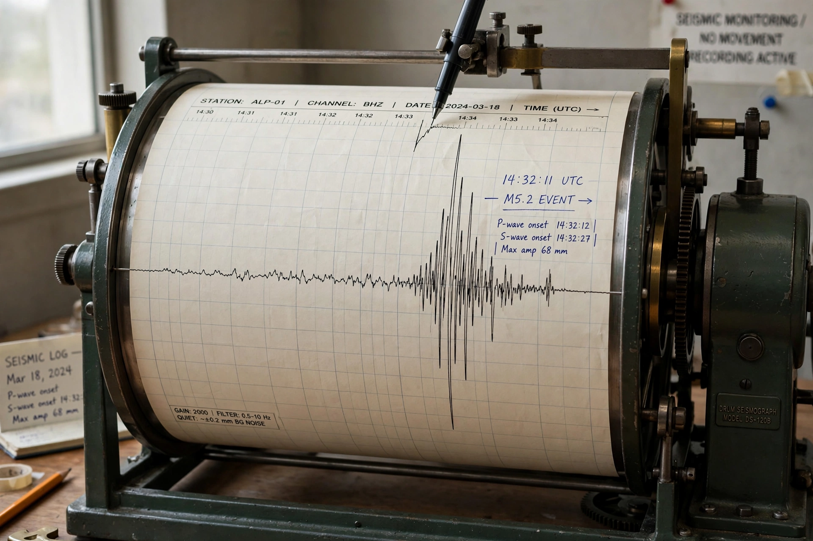
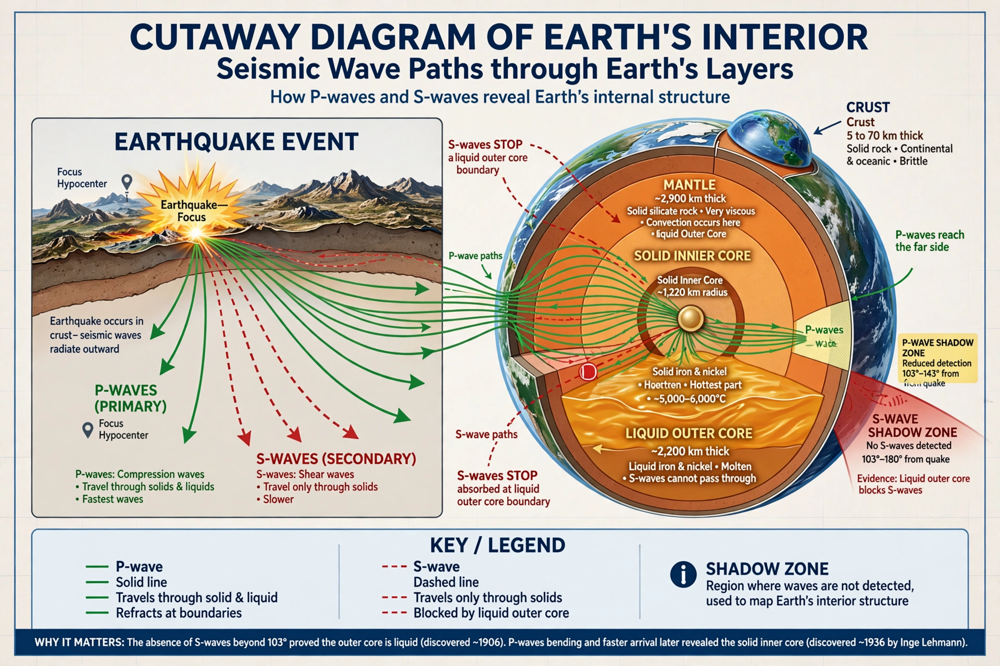

Seismology

Seismology is the scientific study of earthquakes and of the seismic waves that travel through and around the Earth. Because seismic waves bend, reflect and change speed at internal boundaries, seismology is the principal tool for imaging the planet's interior — the structure of the crust, mantle and core is known almost entirely from seismometers.
The same science underlies earthquake monitoring, hazard assessment, and the verification of nuclear-test-ban treaties.
Waves and instruments
Earthquakes radiate body waves (fast compressional P-waves and slower shear S-waves) and surface waves, which often do the most damage. Seismometers record ground motion in three dimensions; modern global networks share data in near-real time, letting agencies locate an earthquake and estimate its magnitude within minutes.

Scales have evolved from the local Richter scale (1935) to the moment magnitude scale, now standard for large events, which is tied to the fault's size and slip. Intensity scales, such as Modified Mercalli, describe shaking and damage at a place.
Reading Earth's interior
Discontinuities discovered by seismologists define Earth's architecture: the Mohorovičić discontinuity (Moho) at the base of the crust (1909), the core–mantle boundary identified by Beno Gutenberg, and Inge Lehmann's 1936 demonstration that the inner core is solid. Travel-time curves, and later seismic tomography, revealed subducting slabs, mantle plumes and the heterogeneity of the deep Earth.
Applications
Seismology informs building codes and hazard maps (see Plate tectonics and Natural disaster), tsunami warning, exploration geophysics using controlled sources to image oil, gas and geothermal reservoirs, and the monitoring network of the Comprehensive Nuclear-Test-Ban Treaty, which detects underground explosions worldwide. Passive recordings of ocean microseisms even allow imaging where no earthquakes occur.
See also: Earthquake · Plate tectonics · Subduction · Mantle (geology) · Crust (geology) · Natural disaster